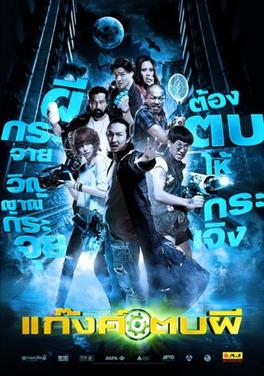

Articles
Introduction to Machine Learning
Machine learning is a subset of artificial intelligence (AI) that provides systems the ability to automatically learn and improve from experience without being explicitly programmed. It focuses on the development of computer programs that can access data and use it to learn for themselves. The process of learning begins with observations or data, such as examples, direct experience, or instruction, in order to look for patterns in data and make better decisions in the future based on the examples that we provide. The primary aim is to allow the computers to learn automatically without human intervention or assistance and adjust actions accordingly.
Edit
Understanding Cybersecurity
Cybersecurity refers to the practice of protecting computers, servers, mobile devices, electronic systems, networks, and data from digital attacks. These attacks are usually aimed at accessing, changing, or destroying sensitive information, extorting money from users, or interrupting normal business processes. Implementing effective cybersecurity measures is particularly challenging today because there are more devices than people, and attackers are becoming more innovative. A strong cybersecurity strategy can provide a good security posture against malicious attacks, protecting an organization from a security breach and the aftermath of financial loss, reputation damage, and legal implications.
Edit
The Basics of Web Development
Web development is the process of creating websites or web applications. It involves tasks such as web design, web content creation, client-side/server-side scripting, and network security configuration. Web development can be divided into two types: front-end development (also known as client-side development) and back-end development (also known as server-side development). Front-end development involves using languages like HTML, CSS, and JavaScript to create the visual part of the website that users see and interact with. Back-end development involves using languages like PHP, Python, or Java to handle data storage and retrieval, and ensure that the website works as expected.
Edit
Ghost Day (Thai: แก๊งค์ตบผี) is a 2012 Thai horror comedy film directed by Thanit Jitnukul, Titipong Chaisat, and Sorathep Vetwongsatip.
The film is set in modern-day Bangkok where the production team behind the television series Ghost Day is told by their show is going to be cancelled. To stop the end of their program, the staff decide to find a real haunted area and, after viewing a video online by ghostbusters Mhen (Apisit Opasaimlikit) and Chiad (Padong Songsang), they decide to approach them to do a deal. Mhen and Chiad have brought along a real female ghost who appears and possesses the show's director, Pom (Boriboon Chanruang).[1]
film was shown at the 16th Puchon International Fantastic Film Festival and was the fifth-highest-grossing film in Thailand on its opening week.
Release
Ghost Day was shown at the 16th annual Puchon International Fantastic Film Festival.[2][3]
The film was released in Thailand on February 23, 2012.[1] It was the country's fifth-highest-grossing film in its opening week,
grossing $44,438.[4] It grossed a total of $79,292 on its theatrical run in Thailand.[5]
Reception
Derek Elley of Film Business Asia gave the film a six out of ten rating, referring to the film as "one of the better
[Thai horror comedy films], though still very silly."[1]
See Also
Notes
- Elley, Derek (August 2, 2012). "Ghost Day". Film Business Asia. Retrieved March 11, 2013.
- "16th Film". Puchon International Fantastic Film Festival. Archived from the original on May 8, 2014. Retrieved March 11, 2013.
- "Ghost Day". Puchon International Fantastic Film Festival. Archived from the original on April 11, 2013. Retrieved March 11, 2013.
- "Thailand Box Office". Box Office Mojo. Retrieved March 11, 2013.
- "GANG TOB PHEE (GHOST DAY)". Box Office Mojo. Retrieved March 11, 2013.
External Links
- Ghost Day at IMDb Edit this at Wikidata
Ghost Day

Thai film poster for Ghost Day
| Directed by |
Thanit Jitnukul
Titipong Chaisat
Sorathep Vetwongsatip
|
| Written by |
Titipong Chaisati
Sorathep Vetwongsatip
Nidchaya Boonsiripunth
Samkan Chotikasawad
|
| Produced by |
Thanit Jitnukul
Thawatchai Phanpakdee
|
| Starring |
Joey Boy/p>
Pimradapa Wright
Padong Songsang
Surasak Wongthai
|
| Cinematography |
Wattana Wanchooplao
|
| Edited by |
Sunit Asvinikul
Nopadol Kumduang
Titipong Chaisati
|
| Music by |
Thippatai Pirompak
|
| Production company |
Phranakorn Film
Pimradapa Wright
|
| Release date |
February 23, 2012 (Thailand)
|
| Running time |
92 minutes
|
| Release date |
February 23, 2012 (Thailand)
|
| Box office |
$79,292
|